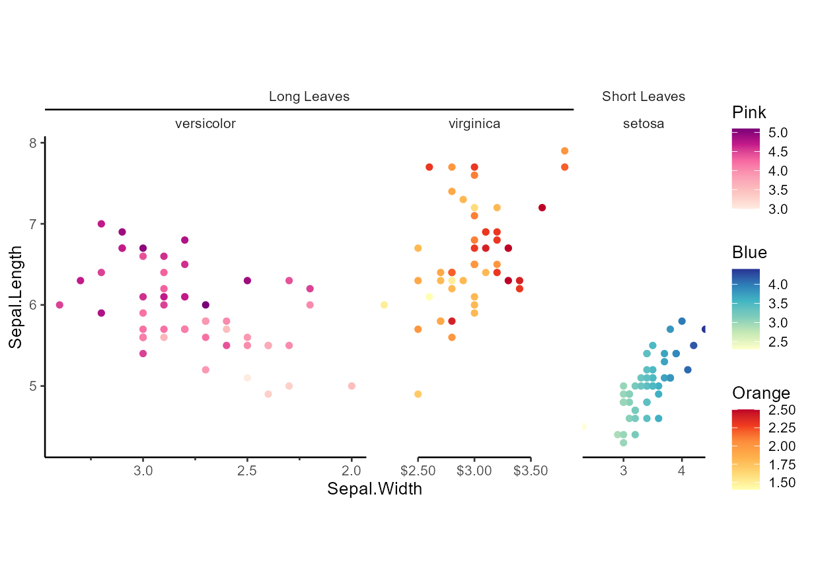

The ggh4x package is a ggplot2 extension package. It provides some utility functions that don’t entirely fit within the ‘grammar of graphics’ concept —they can be a bit hacky— but can nonetheless be useful in tweaking your ggplots. Examples include adjusting the sizes of facets, mapping multiple aesthetics to colours and specifying individual scales for facets. Besides this, it is also a small collection of geoms, facets, positions, guides and stats.
Installation
You can install the development version from GitHub with:
# install.packages("devtools")
devtools::install_github("teunbrand/ggh4x")Overview
There are a few topics explored in the package’s vignettes with examples. Links to these topics are below.
- Options to tailor facets, including:
- Nested facets that have strips that can span multiple panels.
- Adjusting the position scales on a per-panel basis.
- Varying the size of panels without being limited to the global
aspect.ratioor fixed coordinates.
- ggh4x has some position guides that change the way x- and y-axes look. You can:
- include the minor breaks as minor tick marks.
- detail log10 axes with logarithmic tickmarks.
- indicate nested relations in discrete axes.
- mirror the results of hierarchical clustering with dendrogram axes with help from the ggdendro package.
- There are some stat layers that can make it easier to plot. These stat layers can:
- overlaying the theoretical density of several distributions, which are computed with the fitdistrplus package.
- draw a trendline of your data with a rolling kernel.
- plainly transform x and y position in a group-wise manner.
- calculate run-length encodings of your data.
Example
Below you’ll find an example that illustrates some of the features of ggh4x.
library(ggh4x)
#> Loading required package: ggplot2
library(scales)
df <- transform(
iris,
Nester = ifelse(Species == "setosa", "Short Leaves", "Long Leaves")
)
# Basic plot
g <- ggplot(df, aes(Sepal.Width, Sepal.Length)) +
theme_classic() +
theme(strip.background = element_blank())
# For making a plot with multiple colour scales, we'd first need to make layers
# with alternative aesthetics. We'll choose a colour scale for every species.
# This will produce a few warnings, as ggplot2 doesn't know how to deal with
# the alternative aesthetics.
g <- g +
geom_point(aes(SW = Sepal.Width),
data = ~ subset(., Species == "setosa")) +
geom_point(aes(PL = Petal.Length),
data = ~ subset(., Species == "versicolor")) +
geom_point(aes(PW = Petal.Width),
data = ~ subset(., Species == "virginica"))
#> Warning: Ignoring unknown aesthetics: SW
#> Warning: Ignoring unknown aesthetics: PL
#> Warning: Ignoring unknown aesthetics: PW
# These alternative aesthetics don't mean a lot until we add a multi-colour
# scale to the plot. We need to specify our alternative aesthetics and colours
# for every scale. Arguments provided as lists are passed on to individual
# scales.
g <- g +
scale_colour_multi(
aesthetics = c("SW", "PL", "PW"),
name = list("Blue", "Pink", "Orange"),
colours = list(
brewer_pal(palette = "YlGnBu")(6),
brewer_pal(palette = "RdPu")(6),
brewer_pal(palette = "YlOrRd")(6)
),
guide = guide_colorbar(barheight = unit(50, "pt"))
)
g
# We can make a facet wherein duplicated strip labels are merged into one strip
g <- g +
facet_nested(~ Nester + Species, scales = "free",
nest_line = TRUE)
# Like we did for colours, we might also want to set position scales for every
# panel individually. We set these in the same order the facets appear in.
position_scales <- list(
scale_x_reverse(guide = "axis_minor"),
scale_x_continuous(labels = dollar, guide = "axis_truncated"),
scale_x_continuous(breaks = c(3, 4), expand = c(0,0))
)
# Adding the list of scales to the plot
g <- g + facetted_pos_scales(x = position_scales)
# Setting the sizes of panels individually
size <- 2 / (1 + sqrt(5))
g <- g + force_panelsizes(cols = c(1, size, size ^ 2), respect = TRUE)
g
Footnote
I would like to mention that there are also packages that do some similar things to what this package does. facetscales also has a facet function wherein scales can set per row/colum. The egg package can also set panel sizes. The lemon package also has options to tweak position axes. The relayer and ggnewscale packages also allow multiple colour scales in the same plot.
Historically, many of these functions come from the ggnomics package, but have been moved here as a package independent of Bioconductor infrastructure.